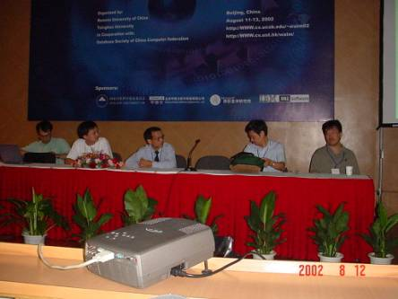
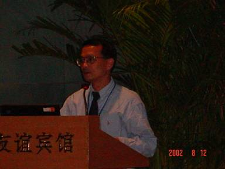
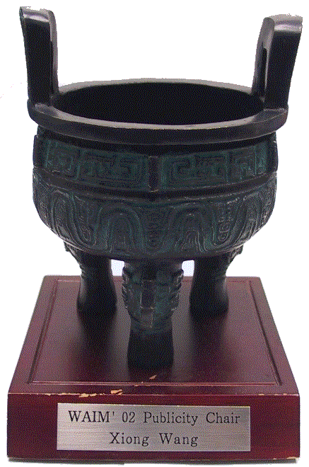

Dr. Shawn X. Wang at WAIM02
Home
Schedule
Students
Publications
Services & Honors
Experience
On Hero
Encounter Swindlers
The panel on research issues in bioinformatics at The 2002 International Conference on Web Age Information Management
 
Dr. Wang was also the Publicity Chair of the Conference.
